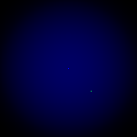

Non-Euclidean gravity
So I was reviewing linear algebra today and found myself asking the question, "How would gravity work in a space with a different notion of distance?"
In normal (Euclidean) space, distance is measured with the Euclidean norm
so the distance between vectors x and y is
If the points at x and y have mass mx and my, respectively, then Newton's law of gravity tells us that the gravitational force with which x pulls on y is
where G is a special "gravitational constant."
I programmed in Python a basic simulation that calculated the force acting on a particle moving near a much larger mass and then experimented with changing the norm used to calculate the gravitational force.
You can see the normal case below. The particle orbits the central mass in an ellipse with the central mass at one of the foci just like we see in the real world (hats off to Kepler). I've added in the background a gradient that indicates where the central mass's gravitational force is strongest (keep in mind that all force vectors point toward the center). I've also added coloration to the path that the orbiting particle traces, so it is more yellowish when it is moving quickly.
The first thing I tried was to use a different norm from the class of p-norms. A p-norm has the form
The next thing I tried was to experiment with norms induced by inner products. The norm induced by an inner product is
and the Euclidean norm is induced by the Euclidean inner product, or "dot product,"
is a valid inner product. With this in mind, I was able to run my simulation with norms induced by inner products generated from various positive-definite matrices. You can see the results below.
These didn't turn out to be quite as exciting as I thought they might be, although they are still reasonably interesting: it looks like the force field is simply transformed linearly, with the given transformation having something to do with the matrix used to generate the norm. The particles' orbits still appear to be ellipses, although the center mass is no longer positioned at a focus of the ellipse. I can see myself spending a lot of time figuring out what exactly is going on here, but I've already spent way too much time on this for now, so that will have to wait for another time.